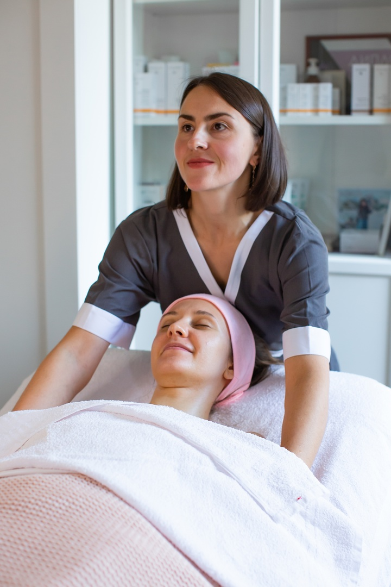
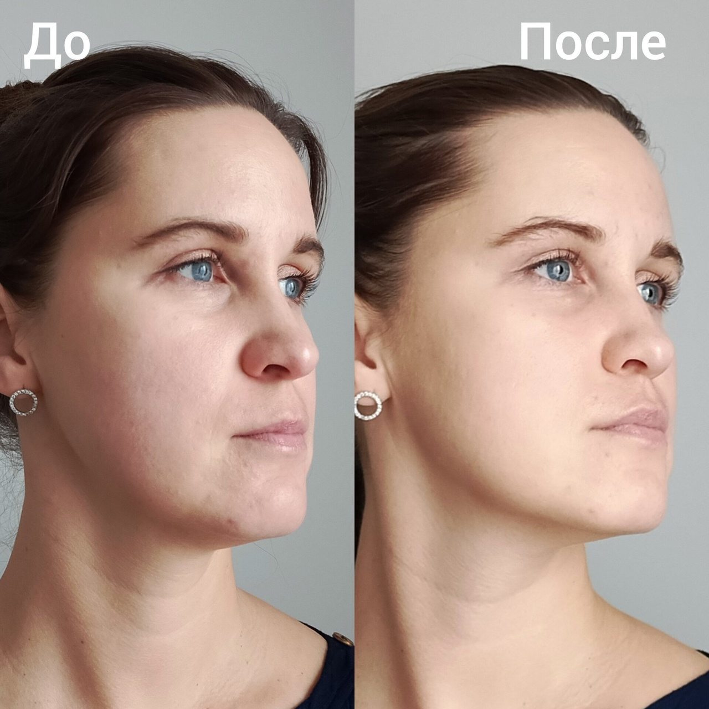

Знакомьтесь, выпускница курса Евгения Копылова, косметолог из Санкт-Петербурга. Она поделилась с нами своими успехами после курса ВК-бабло.
— Расскажи, что было до курса, какой средний доход был в месяц? Сколько клиентов?
— Я уже не вспомню. Доход не сильно увеличился, но главное что не упал всё было на фоне изменения ЦА, много отвалилось постоянных клиентов из за ситуации в мире, после курса удалось набрать новую ЦА из премиум-сегмента и получать клиентов из ВК, раньше это было 1-2 человека в год, сейчас 2-3 в месяц. Рекламу не делаю, т.к уже хорошо работает сарафанка.
Настройка группы помогла хорошо сегментировать ЦА и делать персональные предложения.
— Какие сложности были во время обучения на нашем курсе? Насколько сложно было учиться? За сколько прошла обучение?
— Сложностей не было, всё очень понятно, обучение очень понравилось, за месяц осилила. Рекламу настраивала, были клиенты с рекламы.
Для меня особая ценность что было и видео и текстом информация. Это вообще супер удобно.
— Каково было работать с куратором, что было полезно, мотивировало ли это тебя? Как считаешь, без куратора получилось бы так же?
— Да, обратная связь очень помогала, были моменты которые приходилось переделывать после проверки куратором, если бы брала повторно, то тоже с куратором.
Без куратора есть риск что-то сделать неправильно, а думать, что всё ок.
— Какие сейчас действия делаешь для привлечения клиентов? Как часто пишешь посты? Рекламу сейчас не запускаешь, на сарафане работаешь, да? А раньше?

— Сейчас, делаю публикации в сториз в телеграмм, и вотсап, посты в группе и на личной странице, рассылку по клиентам. В телеге и вотсап ежедневно, в группе несколько раз в месяц, на личной странице по настроению, то каждый день, то раз в неделю.
Рекламу уже полгода точно не запускала, все новые клиенты по рекомендациям приходят, так же 7-8 человек новых в месяц.
— А можешь поделиться, как изменилась жизнь, когда увеличился доход? Может что-то купила себе? Съездила в путешествие? Что-то смогла сделать, чего раньше не могла позволить себе)
— Стала больше себе позволять того, что меня вдохновляет и наполняет энергией. Красивая вкусная еда, регулярный массаж, уроки вокала, танцев. Когда ты наполнена, у тебя есть много сил делиться этим с другими. Я только на 100 тыс ежемесячно оказываю услуг без оплаты как волонтёр в госпиталях Петербурга восстанавливая после травм и принимая мам особых детей. Для меня это огромная радость, наполнять этот мир добром.

— Все, остался только вопрос, сколько сейчас зарабатываешь? Сколько в среднем в месяц? Сколько клиентов? А вот примерно сколько за год было прошедший заработано?
Чистыми 60-70 т.руб. но я очень много вкладываю в сервис, качественную косметику, обучение, благотворительность.
В прошлом году чистыми 40-60 т руб в месяц.
Клиентов в месяц сейчас 40-60.
У меня премиум сегмент, для него считается хорошая загрузка на уровне 50%, у меня 60-70℅
— Очень крутые результаты, спасибо большое, что поделилась, очень рада, что у тебя так здорово идут дела, искренне поздравляю тебя с этим)